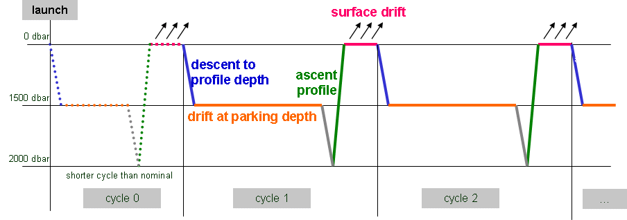

2 Introduction
This document is the Argo data user’s manual. It contains the description of the formats and files produced by the Argo DACs.
The changes from the previous version are highlighted in yellow.
2.1 Notice on file format change transition
This version of the “User’s manual” is adjusting the file formats to the growing variety of floats and user needs. It introduces a complete revision of metadata and technical files. To cope with this radical change, during a transition period the version 2.2 and 3.1 of the technical and metadata file will be valid in the Argo data system.
2.2 User Obligations
A user of Argo data is expected to read and understand this manual and the documentation about the data contained in the “attributes” of the NetCDF data files, as these contain essential information about data quality and accuracy.
A user should acknowledge use of Argo data in all publications and products where such data are used, preferably with the following standard sentence and DOI:
“These data were collected and made freely available by the international Argo project and the national programs that contribute to it. http://doi.org/10.17882/42182”.
The Argo dataset can also be added to the references section using the following citation:
Argo (2019). Argo float data and metadata from Global Data Assembly Centre (Argo GDAC). SEANOE. http://doi.org/10.17882/42182
More information about the available DOIs for both Argo documents and the dataset versions can be found here:
2.3 Disclaimer
Argo data are published without any warranty, express or implied.
The user assumes all risk arising from his/her use of Argo data.
Argo data are intended to be research-quality and include estimates of data quality and accuracy, but it is possible that these estimates or the data themselves may contain errors.
It is the sole responsibility of the user to assess if the data are appropriate for his/her use, and to interpret the data, data quality, and data accuracy accordingly.
Argo welcomes users to ask questions and report problems to the contact addresses listed on the Argo internet page.
Argo data are continuously managed; the user should be aware that after he downloaded data, those data may have been updated on the Argo data server.
2.4 Further information sources and contact information
Argo websites: https://argo.ucsd.edu/, https://www.argodatamgt.org/
If you detect any problem in the Argo dataset, please give us your feedback via support@argo.net
2.5 Argo program, data management context
The objective of the Argo program is to operate and manage a set of more than 3000 floats distributed in all oceans, with the vision that the network will be a permanent and operational system.
The Argo data management group is creating a unique data format for internet distribution to users and for data exchange between national data centres (DACs) and global data centres (GDACs).
Profile data, metadata, trajectories and technical data are included in this standardization effort.
The Argo data formats are based on NetCDF because:
It is a widely accepted data format by the user community,
It is a self-describing format for which tools are widely available,
It is a reliable and efficient format for data exchange.
2.6 Argo float cycles
A typical Argo float drifts for four years or more in the ocean. It continuously performs measurement cycles.
A cycle is defined as a series of actions made by a float and includes either a descending profile or an ascending profile (or, rarely, both); it may also include immersion drift or surface drift.
An Argo cycle starts with a descent toward deep water, usually from the surface.
It ends after the next programmed ascent to the surface, and if begun, after the full surface interval has been completed. During the surface interval, data transmission typically occurs but it is not a requirement for a cycle to have occurred
Each cycle of a float has a unique number, increased by one after each ascent to shallow water. For most floats, this will be the cycle number transmitted by the float. In some cases, this number will need to be calculated by the operator.
Profile measurements (e.g. pressure, temperature, salinity) are performed during ascent, occasionally during descent. Subsurface measurements during parking are sometimes performed (e.g. every 12 hours).

A typical Argo float cycle during 3 years or more in the ocean.
A more detailed cycle description is available in reference table 15 (https://vocab.nerc.ac.uk/collection/R15/), chapter §3.15.
Cycle naming convention
Float cycle numbers usually start at 1. The next cycles are increasing numbers (e.g. 2, 3,…N). If the float reports cycle number, this is what should be used in all Argo files.
Very conveniently some floats transmit their configuration during the transmissions before they descend for profile 1.
Cycle 0 contains the first surface drift with technical data transmission or configuration information. This data is reported in the technical data files.
Cycle 0 may contain subsurface measurements if a descending/ascending profile is performed before any data transmission. The time length of this cycle is usually shorter than the next nominal cycles. The cycle time is therefore regular only for later profiles and may be variable if the float is reprogrammed after its deployment.
2.7 Real-time, real-time adjusted data and delayed mode data
Data from Argo floats are transmitted from the float, passed through processing and automatic quality control procedures as quickly as possible after the float begins reporting at the surface. The target is to issue the data to the GTS and Global Data Assembly Centres (GDACs) within 12 hours of surfacing, or as quickly thereafter as possible. These are called real-time data or raw data. They are denoted by DATA_MODE = ‘R’.
The data are also sent to the Principal Investigators, the scientists who apply additional procedures to check data quality and apply adjustments where necessary. These constitute delayed-mode data and are denoted by DATA_MODE = ‘D’. For the core CTD data, the target is for the delayed-mode data to be available at the GDACs about 12 months after the raw data are transmitted. For biogeochemical (BGC) data, their delayed-mode data can be available as early as 5 to 6 cycles after data transmission.
The difference in timing of availability between delayed-mode CTD and BGC data are due to the difference in maturity of the sensors. CTD sensors are relatively mature sensors and their raw data are usually of good quality. Their delayed-mode assessment involves evaluation of the long-term sensor stability, which typically requires a float data record of about 12 months. On the other hand, BGC sensors are relatively new and their raw data are typically unfit for scientific usage. Therefore early adjustments (after the first 5 to 6 cycles) can increase the accuracy of the raw BGC data significantly. Re-assessment of delayed-mode BGC data is carried out when longer float data records become available.
Some adjustments can be applied to the raw data automatically in real-time (such as adjustments based on previous delayed-mode corrections). These real-time adjusted data are denoted by DATA_MODE = ‘A’. The real-time adjustment can improve the data quality for users who need to access data in real-time, but they are only an interim adjustment and are revised in delayed-mode.
2.8 Optional versus Mandatory variables in Argo NetCDF files
In the File format descriptions below, some variables are marked as optional in the “Comment” column. This means that this variable may or may not be present in the Argo file.
When there is no “Optional” mentioned, this means that the variable must be in the NetCDF file (or else said, this is a mandatory variable).
Possible values are further described in the “Comment” column. Regarding char string variables:
Either the values are chosen within a constrained vocabulary and the link to this vocabulary is provided
Or the values consist of free text
Or the values consist of a combination of a constrained part and a free part.
Or FillValue if no information is available and the variable is allowed to be “empty”.
These four possibilities apply to both mandatory and optional variables.